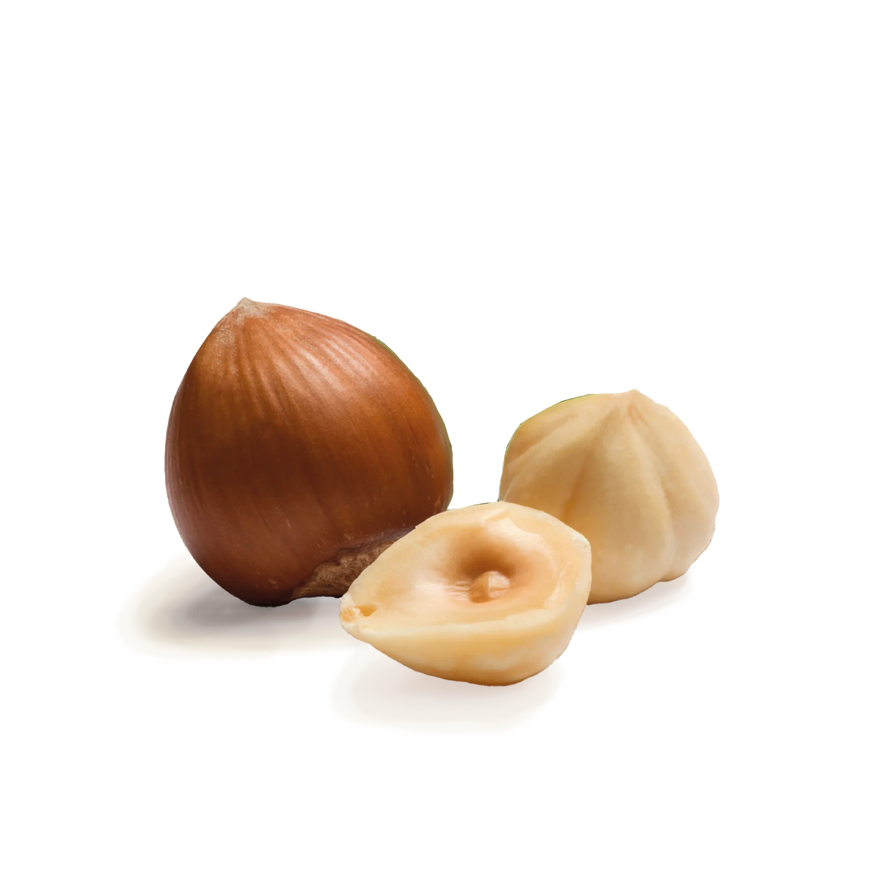
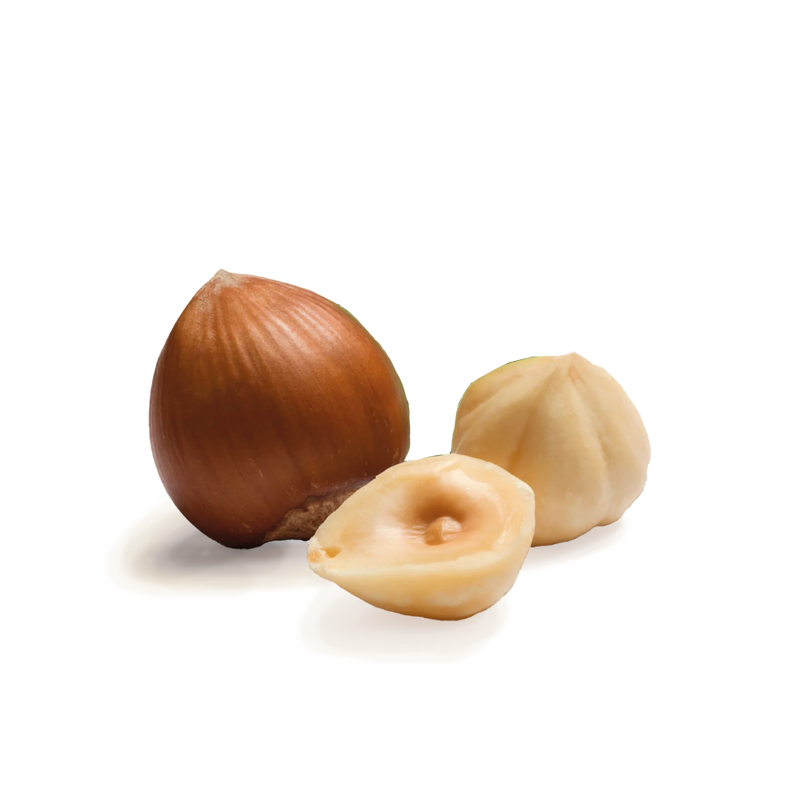

Ňamli
Ňamli is a platform that allows you to create your own recipes and share them with the world. You can also search for recipes created by other users and save them to your profile.

Ňamli is a platform that allows you to create your own recipes and share them with the world. You can also search for recipes created by other users and save them to your profile.
 
